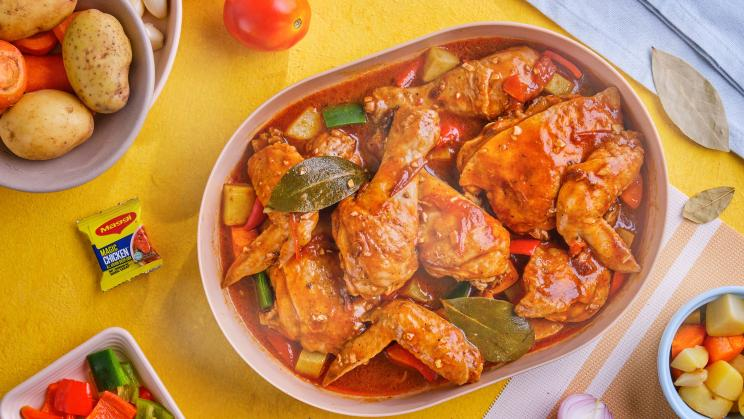
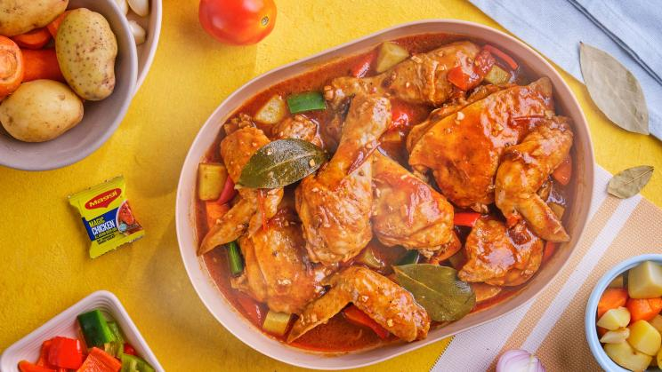

LIST
- Filipino Chicken Adobo
This easy recipe features tender chicken simmered in a tangy soy and vinegar sauce, making it a delicious option for any meal. It's perfect for busy nights and brings that classic, comforting taste of the Philippines straight to your table. Try this healthy, crowd-pleasing recipe today!.

- Filipino Chicken Afritada
This hearty dish is packed with tender chicken, vegetables, and a flavorful tomato-based sauce, perfect for serving a crowd or meal prepping ahead. Serve it with rice for a comforting and complete meal.

This easy recipe features tender chicken simmered in a tangy soy and vinegar sauce, making it a delicious option for any meal. It's perfect for busy nights and brings that classic, comforting taste of the Philippines straight to your table. Try this healthy, crowd-pleasing recipe today!.
This hearty dish is packed with tender chicken, vegetables, and a flavorful tomato-based sauce, perfect for serving a crowd or meal prepping ahead. Serve it with rice for a comforting and complete meal.
